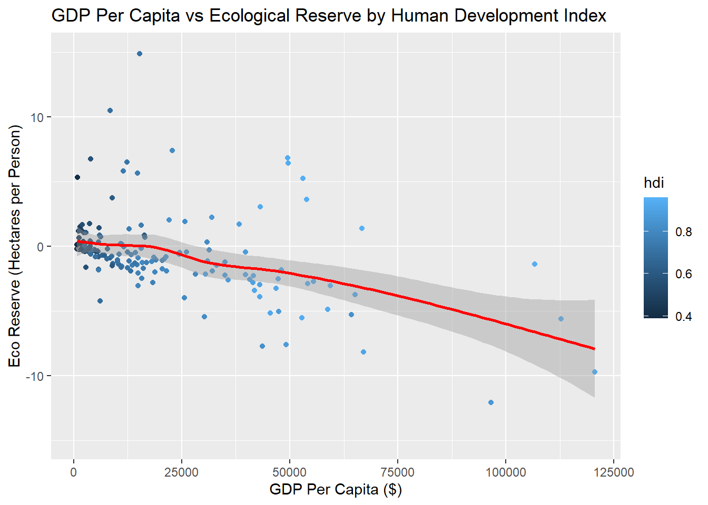
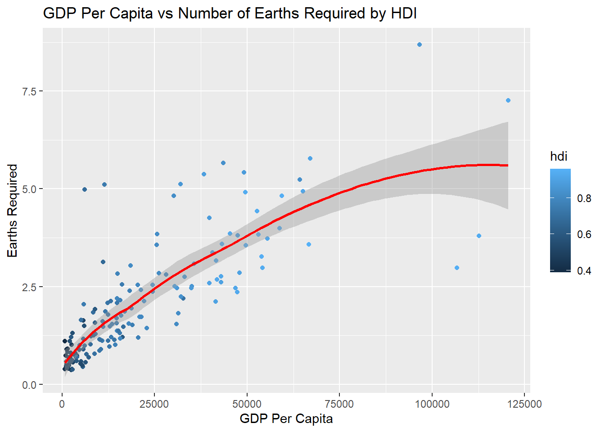
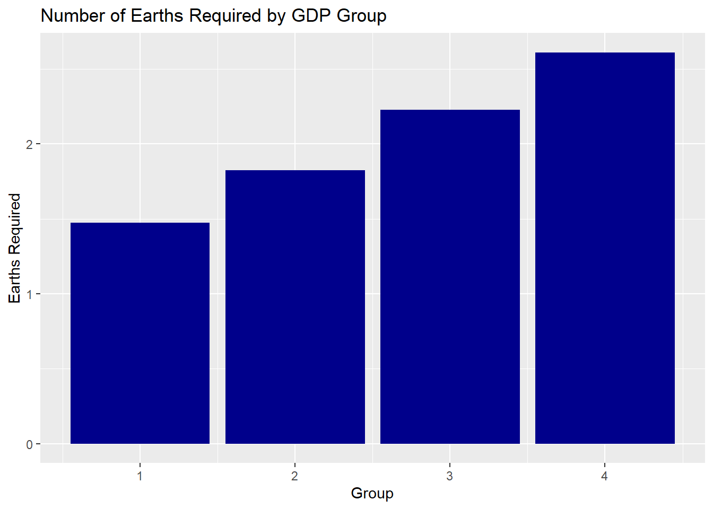
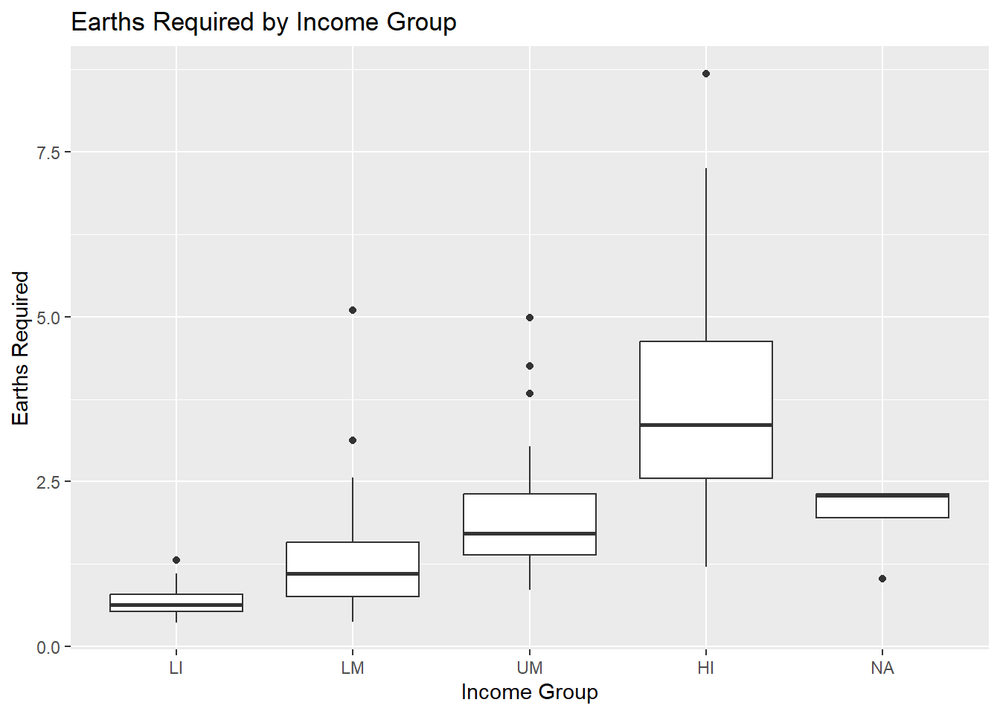
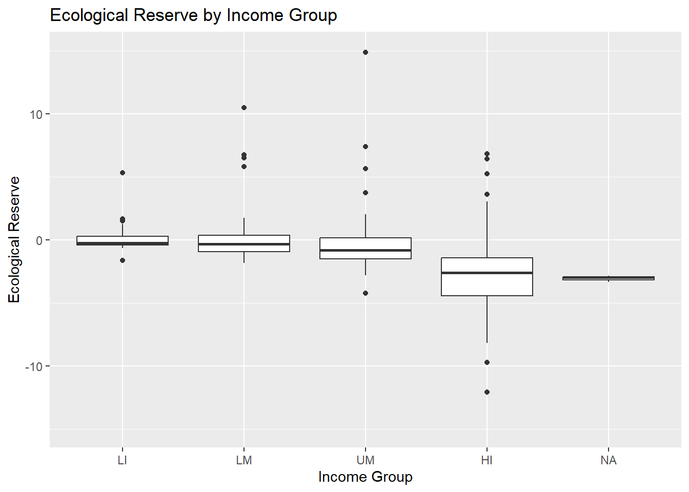
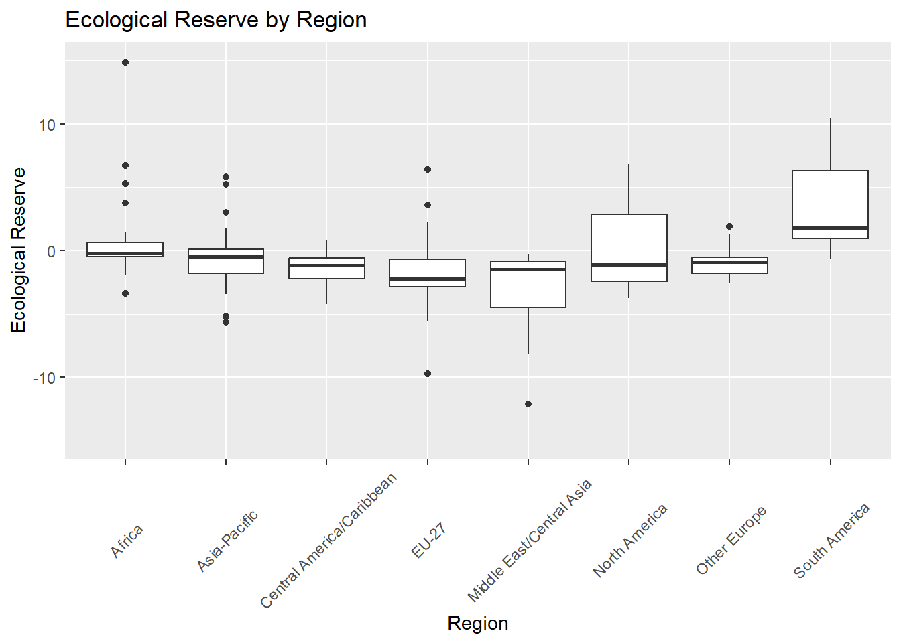
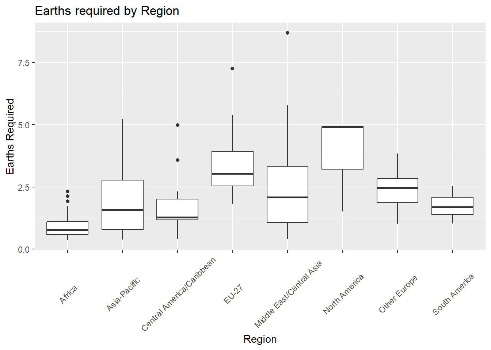
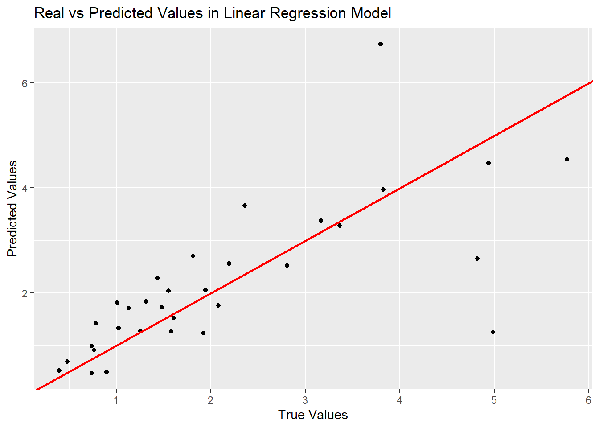

The Correlation Between a Country’s Financial Status and Its Sustainability
by Pranav Sant
Background
The average global temperature has skyrocketed over the years, caused by excess carbon emissions and waste. This is primarily caused by a global ecological footprint that significantly exceeds our bio-capacity, causing us to deplete our resources as well as release waste and carbon into the environment. Because some countries contribute to this unsustainable behavior more than others, it is important to explore any possible trends or reasons that may cause this.
Results
Initial Data Exploration and Plotting
Figure 1. The correlation between GDP Per Capita and Ecological Reserve with Human Development Index
This graph shows that as GDP Per Capita increases, the ecological reserve tends to decrease, showing the countries with a greater per capita GDP are generally more unsustainable.

Figure 2. The correlation between GDP Per Capita and Number of Earths Required with Human Development Index
This graph also supports a similar conclusion to Figure 1. Countries with a higher per capita GDP have an average lifestyle that requires a greater amount of earths, pointing to unsustainability.

Figure 3. The correlation between GDP and Earths Required when GDP is split into groups by quartile. The groups are in order of increasing GDP, with Group 1 having the least GDP and Group 4 having the greatest GDP.
While Figure 1 and Figure 2 use GDP per capita as a their metric, Figure 3 uses GDP. The data had to be grouped due to some outlier data points, but this graph also shows that countries with stronger economies tend to require more earths.

Figure 4. Box Plots of Various Income Groups and their respective Earths Required
While figures until now have relied on GDP per capita and GDP metrics, this graph is based on four Income Groups that were defined through the original dataset.
LI = Low Income, LM = Lower Middle Income, UM = Upper Middle Income, HI = High Income, while the NA category contains countries who were not assigned a group.
This collection of box plots supports the same conclusions as Figures 1-3, showing that countries with superior financial status tend to be more unsustainable.

Figure 5. Box Plots of Various Income Groups and their respective Ecological Reserve
Just like Figure 4, this graph uses income groups to demonstrate the more prominent overuse of resources by countries with a higher income. Figures 1-5 have so far supported that the Earths Required and Ecological Reserve are highly similar in terms of how they are reflected by the financial status of countries.

Figure 6. Box Plots of Various Regions and their respective Ecological Reserve
Instead of directly focusing on finances, Figure 6 examines the correlation between countries’ regions and their ecological reserve through a collection of boxplots for each region. The regions that tend towards being the most unsustainable are Central Asia, Europe, and North America.

Figure 7. Box Plots of Various Regions and their respective Earths Required
This graph is similar to Figure 6 in that it examines sustainability by the region metric. The most unsustainable regions by Earths Required are North America and Europe. When comparing Figure 6 and Figure 7, we can see one of the first times that the metrics of Earths Required and Ecological Reserve present a slighlty different conclusion, as the regions that are more sustainable than others changes depending on which metric we chose.
Hypothesis Testing
T-testing
The Human Development Index measures basic human development on a scale of 0-1.0, taking into account life expectancy, standard of living, and expected years of schooling. This is generally considered an excellent metric of a country’s financial and developmental status, and thus we can use it as a reliable value to test correlation with sustainability.
We split the data into two groups, one called “Low HDI” with an HDI of less than 0.5, and the other called “High HDI”, with HDI greater than or equal to 0.5.
Then, we ran two T-tests to find out if the HDI had a significant correlation with the Earths Required and the Ecological Reserve. For both tests, we set the threshold for significance at 0.05, as we wanted a 95% confidence interval.
The first test was of the Earths Required. Here, the null hypothesis was: the low HDI and the high HDI have no significant difference in the number of earths required. See Figure 2 for the plot that shows the trend apparent in the data.
Welch Two Sample t-test
data: high_hdi$number_of_earths_required and low_hdi$number_of_earths_required
t = -3.9486, df = 154.25, p-value = 0.0001192
alternative hypothesis: true difference in means is not equal to 1.961619
95 percent confidence interval:
1.182521 1.702124
sample estimates:
mean of x mean of y
2.130157 0.687835 This test yielded a p-value that was far less than 0.05, and thus we determined that the high and low HDI groups have a significant difference in Earths Required, allowing us to reject the null hypothesis.
For the second T-test, we used Ecological Reserve. In this case, the null hypothesis was: the low HDI and the high HDI have no significant difference in ecological reserve. See Figure 1 for the plot that shows the trend apparent in the data.
Welch Two Sample t-test
data: high_hdi$ecological_deficit_or_reserve and low_hdi$ecological_deficit_or_reserve
t = -1.3815, df = 146.15, p-value = 0.1692
alternative hypothesis: true difference in means is not equal to 0.594438
95 percent confidence interval:
-1.990718 1.052419
sample estimates:
mean of x mean of y
0.1663464 0.6354959 This test yielded a p-value that was greater than 0.05, and thus we the high and low HDI groups do not have a significant difference in Ecological Reserve, meaning we fail to reject the null hypothesis.
ANOVA testing
We used ANOVA testing to see if there was a significant difference in the mean of the Earths Required and Ecological Reserve between Income Groups. Once again, we used a confidence interval of 95%, meaning we need a p-value less than 0.05 for significance.
First, we looked at Earths Required. The null hypothesis here is: there is no significant difference in the earths required between the different income groups.
Df Sum Sq Mean Sq F value Pr(>F)
income_group 4 217.4 54.36 58.67 <2e-16 ***
Residuals 176 163.1 0.93
---
Signif. codes: 0 '***' 0.001 '**' 0.01 '*' 0.05 '.' 0.1 ' ' 1
1 observation deleted due to missingnessThe ANOVA test yields a p-value far less than 0.05, and thus we can confidently reject the null hypothesis, proving that income group is correlated with earths required.
Next, we looked at Ecological Reserve. The null hypothesis here is: there is no significant difference in the ecological reserve between the different income groups
Df Sum Sq Mean Sq F value Pr(>F)
income_group 4 1863 465.8 4.962 0.000818 ***
Residuals 176 16523 93.9
---
Signif. codes: 0 '***' 0.001 '**' 0.01 '*' 0.05 '.' 0.1 ' ' 1
1 observation deleted due to missingnessThe result here also has a p-value less than 0.05, so we can also reject this null hypothesis. Through this, we know that unlike HDI, income group has a strong correlation with sustainability using both metrics, not just Earths Required.
We conducted similar testing for the region, seeing if there was a significant difference in the sustainability of different areas of the world. The confidence interval remained at 95%. The results were as follows.
For Region vs Earths Required, the Null Hypothesis was: There is no significant difference in the earths required of any two regions.
Df Sum Sq Mean Sq F value Pr(>F)
region 7 136.6 19.51 13.84 3.51e-14 ***
Residuals 173 243.9 1.41
---
Signif. codes: 0 '***' 0.001 '**' 0.01 '*' 0.05 '.' 0.1 ' ' 1
1 observation deleted due to missingnessThe p-value is less than 0.05, so we reject the null hypothesis.
For Region vs Ecological Reserve, the Null Hypothesis was: There is no significant difference in the ecological reserve of any two regions.
Df Sum Sq Mean Sq F value Pr(>F)
region 7 5425 774.9 10.34 8.19e-11 ***
Residuals 173 12961 74.9
---
Signif. codes: 0 '***' 0.001 '**' 0.01 '*' 0.05 '.' 0.1 ' ' 1
1 observation deleted due to missingnessThe p-value is less than 0.05, so we once again reject the null hypothesis.
Regarding the region metric, both tests yielded significant results, showing that there is a significant difference in sustainability by region using both earths required and ecological reserve.
Machine Learning Models
To see how accurately we could predict various metrics using the correlation between financial status and sustainability, we used the machine learning models Logistic Regression and K-Nearest Neighbors and tested their accuracy.
Logistic Regression
We used the logistic regression to predict the earths required using the metrics of GDP per capita and HDI.

R squared value: 0.704489Mean Squared Error: 1.114406Depending on the split, the R squared value for this model can range from 0.5 to 0.9 and the Mean Squared Error can range from 0.6 to 1.3. Overall, this model shows mediocre accuracy. However, it provest that there is a trend in the data.
K-Nearest Neighbors
We used a K-nearest neighbors model to predict the income group using Earths Required and Ecological Reserve.
Confusion Matrix: pred
actual HI LI LM UM
1 0 0 0 0
HI 0 6 0 2 1
LI 0 0 4 2 1
LM 0 0 2 2 5
UM 0 0 0 3 6Accuracy: 0.5428571Depending on the split, the Confusion Matrix accuracy can range from 0.4 to 0.7. Overall, this model also shows mediocre accuracy, but it also proves that there is a real trend.
Discussion
While many of the graphs show a strong general trend indicating that stronger economic status leads to greater unsustainability, the use of the T-tests has shown that there is no significant correlation between the two. The T-test that uses the two HDI groups and the number of earths required results in a p-value of 0.427, which is not significant. The T-test that uses these same groups and the ecological reserve has a p-value of 0.05548, which is closer to the threshold of 0.05 but still insignificant.
However, the ANOVA tests do show some significant correlations. The one that explored income groups and earths required had a P-value of 2 * 10-16, which means that there is a clear significant correlation between the income group classification and the earths required. A similar result occured from the Income group vs ecological reserve test, which had a p-value of 0.000818, which is also significant.
We also compared the region and the sustainability, which also had a significant correlation, with p-values of 3.51 * 10-14 and 8.19 * 10-11 for the earths required and ecological reserve respectively.
Additionally, we also created machine learning models to see if the trends resulted in predictable values. The first was a linear regression that would predict the earths required based on the GDP per capita. This resulted in an R2 value that was around 0.6 to 0.8 depending on how the data was randomly split. Also, the K Nearest Neighbors strategy intended to predict a country’s income group based on the number of earths required and its ecological reserve. The resulting model had a confusion matrix accuracy ranging from 0.5 to 0.6. Overall, both of these models performed with mediocre correctness, and indicate a general correlation that is not strictly followed by the sampled countries.
Code and Data Availability
The dataset that we used is available at https://www.kaggle.com/datasets/jainaru/global-ecological-footprint-2023 and the GitHub repository can be found here: https://github.com/the-codingschool/DSRP-2024-George/tree/dev-Pranav
Acknowledgements
I would like to acknowledge George Zhou for guiding me through this research project, helping me properly understand the data and providing me with questions to explore along my research journey. I would also like to thank Shruti M and Sarah Parker, who helped teach me the R language and answered countless programming questions throughout my research process.